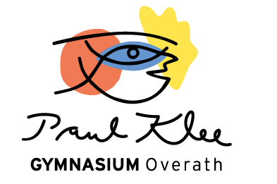

Interaktive Lernmaterialien · Physik
Interaktive Experimente und Visualisierungen für den Physikunterricht – sortiert nach Jahrgangsstufe und Thema gemäß des schulinternen Lehrplans des Paul-Klee-Gymnasiums Overath.

Alle Simulationen laufen direkt im Browser – keine Installation notwendig. Öffne eine Simulation, variiere Parameter und beobachte, wie sich das System verhält. Begleitende Aufgaben erhältst du im Unterricht.